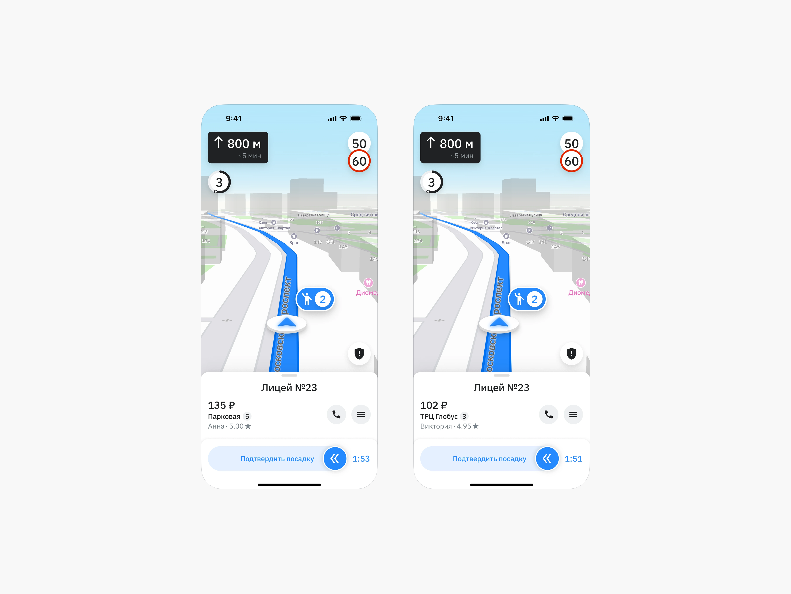
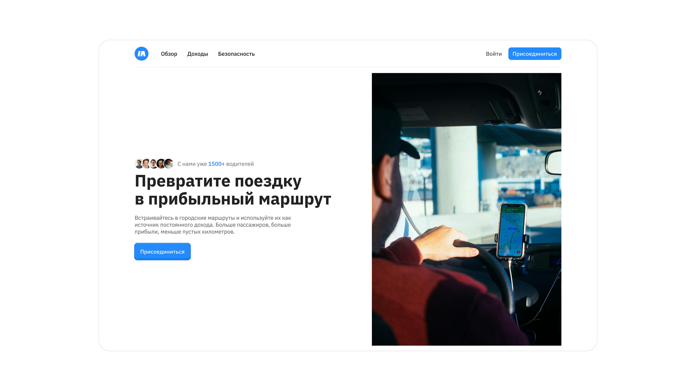
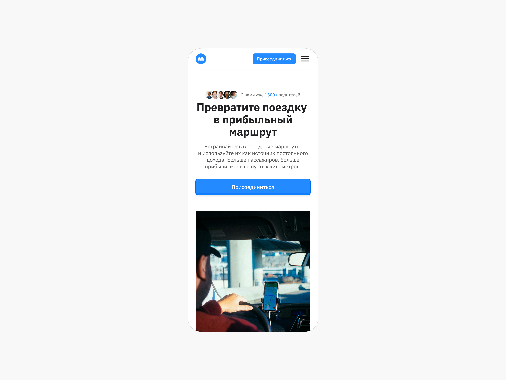

Новый формат работы в такси
Контекст
Компания Marshrutka реализовала в России сервис, в котором водители такси могут встраиваться в маршруты городского транспорта и тем самым закрывать потребность горожан в поездках. Мест в машине мало, стоимость выше, и оплачивать поездку нужно через приложение, а не проездным билетом. Цена зависит от того, сколько «остановок» ты проедешь. Водители могут выходить на маршрут с любой остановки, но должны сделать полный круг маршрута. Таких «кругов» может быть сколько угодно.
Задача
- Сделайте дизайн экрана приложения водителя во время поездки (максимально реалистичный по содержанию), покажите разные состояния, если такие потребуются. Продумайте самостоятельно, какие здесь могут быть ограничения и особенности по сравнению с обычной поездкой на такси или автобусе.
- Сделайте дизайн-концепцию сайта для приложения из первой задачи в виде двух экранов главной страницы. Ваша аудитория — водители такси. Необходимо убедить их, что использовать этот сервис интереснее, чем просто ждать новых заказов, наматывая круги по городу.
Обзор
Текущая городская транспортная система не всегда эффективно покрывает все маршруты пассажиров, оставляя пробелы в доступности и качестве услуг, особенно для тех, кто ищет более гибкие и комфортные решения, чем традиционный общественный транспорт, но при этом более доступные, чем обычное такси. Кроме того, водители такси часто сталкиваются с простоями и неэффективным использованием своего времени и ресурсов.
Сервис Marshrutka призван решить эти проблемы, предлагая инновационный гибрид традиционных такси и городского общественного транспорта. Это не только позволяет горожанам комфортно и быстро добираться до нужных мест, эффективно закрывая пробелы в транспортной сети, но и обеспечивает водителям такси стабильный и предсказуемый доход за счёт фиксированных маршрутов, а также эффективное использование времени и топлива.
Такое решение улучшает городскую мобильность, разгружает существующие виды транспорта, положительно влияет на экономику города за счёт повышения экономической активности и, в конечном итоге, создает значительную бизнес-возможность для компании Marshrutka, позволяя ей масштабироваться, оптимизировать операции и увеличить доходы благодаря уникальному предложению на стыке рынков.
Определение аудитории
Постоянные водители
Для них такси — это основной источник дохода. Они ищут стабильность, предсказуемость и оптимизацию рабочего процесса для максимизации прибыли.
Водители на подработке
Используют такси для дополнительного дохода в свободное время. Для них важным фактором является гибкость графика.
Водители, которые ищут альтернативу
Недовольны условиями работы в текущих такси-агрегаторах (высокие комиссии, неоптимальные заказы, отсутствие прозрачности). Ищут более выгодные и комфортные условия сотрудничества.
Понимание контекста
Пользовательских интервью не проводилось из-за стартап-режима и сжатых сроков. Исследование строилось на анализе конкурентов, сегментации аудитории и продуктовых гипотезах.
Где они физически находятся?
- на дорогах города, в трафике,
- на стоянках такси или в ожидании заказов,
- начальные и конечные точки маршрутов общественного транспорта,
- внутри своего автомобиля (основное рабочее место).
Какое триггерное событие вызывает эту потребность?
- желание увеличить заработок или стабилизировать доход,
- простои,
- поиск более эффективных способов использования топлива и времени,
- недовольство текущими условиями работы (например, комиссии агрегаторов, непредсказуемость заказов),
- желание максимально использовать «обратный» путь перед завершением смены.
Сколько времени у них есть?
- Обычно водители такси работают в гибком графике, самостоятельно управляя своим временем. Им нужно решение, которое позволит им эффективно использовать как короткие промежутки времени, так и длительные смены.
- Время, затрачиваемое на «холостые» пробеги или ожидание заказа, является для них потерянным временем.
Потребности аудитории
Высокоуровневая мотивация → максимальное использование рабочего времени и получение стабильного дохода
Этого они могут достичь с помощью:
- стабильного потока пассажиров и предсказуемого маршрута,
- оптимизации маршрутов и расхода топлива,
- прозрачности и контроля над заработком,
- гибкости в работе.
Дизайн-решение
Сценарий
Водитель подъезжает к остановке. В машине едет 3 пассажира, двое из них выходят на этой остановке, один пассажир продолжает поездку, а в свою очередь ещё 2 человека ожидают поездку.
Реализация
На подъезде к остановке у водителя активируется кнопка «На остановке». После её нажатия пассажирам, которые ждут машину, приходит пуш-сообщение о том, что водитель на месте и их ожидает. До этого пользователи заказали через приложение «маршрутку», а сервис распределил их в порядке очерёдности заказа на случай, если пассажиров будет больше, чем мест в машине. Приоритет отдаётся тому, кто заказал раньше.
После этого активируется возможность завершить поездку для текущих пассажиров. В нашем сценарии на этой остановке свою поездку завершают 2 пассажира.
Запускается таймер, чтобы водитель следил за временем отведённым на высадку и посадку пассажиров.
Он видит информацию про пассажиров: того, кого высаживает; тех, кто ещё ожидает высадки; ожидающих на остановке; и тех, кто ещё в пути.
Водитель завершает поездку слайдером, чтобы избежать случайных нажатий и прокликиваний сразу всех пассажиров.

Теперь, после высадки пассажиров, водитель может посадить новых.
На иконке остановки водитель видит количество новых пассажиров. В случае если ему нужно увидеть подробную информацию про них, он может потянуть карточку вверх.
В случае необходимости водитель может связаться с пассажиром, открыть расширенное меню или взаимодействовать напрямую через карточку пассажира.
Как и в случае завершения поездки, посадку и начало пути водитель подтверждает слайдером, но теперь справа налево. Это сделано, чтобы обратить внимание водителя на то, что это посадка пассажира, и избежать действий на автомате.
Далее начинается поездка до следующей остановки.
Обоснование ценности решения
Интерфейс был построен вокруг одного сценария, но ключевого в процессе работы водителя. Все действия последовательны, что снижает вероятность ошибки и перегрузки информацией.
Главные действия можно выполнять с минимальным количеством нажатий, чтобы обеспечить безопасность езды.
Около каждого пассажира отображается сумма за проезд, чтобы обеспечить прозрачность дохода водителя и повысить его мотивацию.
Все шаги разбиты на этапы и сгруппированы, чтобы упростить интерфейс и дать возможность водителю совершать действия, не отвлекаясь от дороги.
Решение разрабатывалось с учётом масштабируемости, чтобы его можно было адаптировать под другие сценарии.
Решение спроектировано таким образом, чтобы не просто повторять механику такси, а переосмыслить сценарий и адаптировать интерфейс под новую модель.
Создание макета сайта
Цели:
- донести, почему участие в сервисе выгоднее, чем работа просто в такси;
- показать, что работа в сервисе стабильная, понятная и гибкая;
- заверить водителей, что они не будут сталкиваться с простоями и впустую тратить время и топливо;
- дать чёткий и быстрый путь для подключения (CAT).
Подход к дизайну:
- концентрироваться на выгоде и пользе для водителей;
- указать на главные преимущества сервиса (оптимизированная и эффективная работа, прозрачный доход, гибкий график и социальная польза);
- подчеркнуть, что это новый формат поездок, а не просто такси;
- Tone of Voice должен быть нейтральным, уверенным, без самовосхваления и фамильярностей.


Измерение успеха
Для оценки эффективности дизайн-решения и подтверждения его ценности следует определить метрики. Если предложенное решение окажется успешным, мы сможем наблюдать следующие изменения:
-
Увеличение регистраций водителей через сайт
Количество новых водителей, успешно завершивших регистрацию через сайт.
Рост числа регистраций является прямым индикатором того, что сайт эффективно доносит ценность сервиса и мотивирует присоединиться.
-
Снижение времени простоя между поездками
Среднее время ожидания следующего заказа после завершения предыдущего маршрута.
Уменьшение простоя означает более эффективное использование времени водителем и высокую операционную активность.
-
Повышение удовлетворённости водителей (по NPS)
Измерение уровня лояльности и готовности рекомендовать сервис другим.
Высокий NPS свидетельствует о доверии, удобстве и удовлетворённости от работы с приложением.
-
Увеличение количества маршрутов, выполненных в день
Среднее количество заказов, выполненных одним водителем за рабочий день.
Рост производительности водителей за счёт более эффективных маршрутов и снижения фрустрации при взаимодействии с интерфейсом.